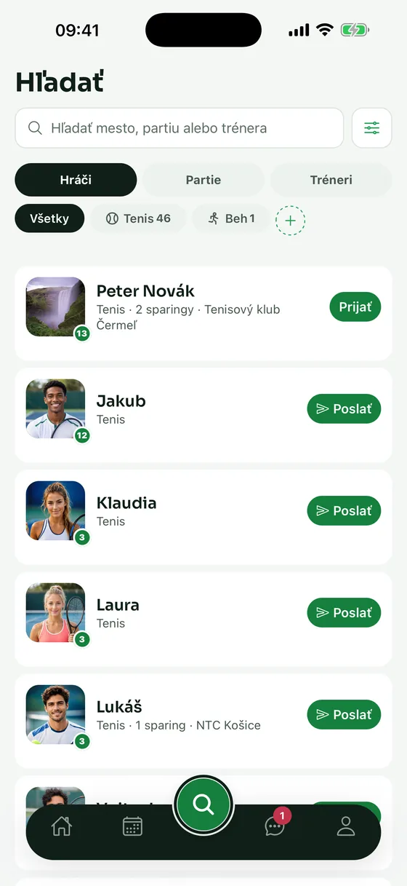

01 — Spoluhráč
Nájdi spoluhráča na svoj šport
Vidíš hráčov vo svojom meste podľa športu. Pošleš žiadosť o hru, a keď ju prijme, otvorí sa vám chat.
- Hráči podľa športu a mestaPri každom hráčovi vidíš, čo hráva a na akej úrovni.
- Žiadosť na konkrétny športSpoluhráč vie, o čo ide, ešte než odpovie.
- Vždy vieš, na čom siKeď žiadosť prijme, dohodnete si termín v chate. Keď odmietne, dozvieš sa to tiež a nečakáš naprázdno.